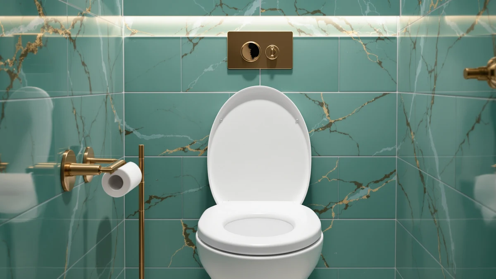

Lunderg Padded Toilet Seat Review (2026): Worth It?
Prices and picks verified as of October 2026. Independent, reader-supported reviews.


Quick Answer
This Lunderg Padded Toilet Seat Riser review finds a straightforward option for anyone who wants a modest height boost without buying a new seat. It adds about 2 inches of firm support for $46.95, and it fits over an existing round or elongated bowl rather than replacing the hardware you already have.
Our pick: Lunderg Padded Toilet Seat Riser, $46.95 Check Price on Amazon
Bottom line: our top pick is the Lunderg Padded Toilet Seat Riser for Seniors - Adds 2 Inches. at $46.95.
Things to Know Before You Buy
- The riser adds about 2 inches of height, a smaller lift than most dedicated raised seats, which matters if you need a bigger boost for knee or hip pain.
- It is built from a high-density padded material rather than molded plastic, so it sits firmer than a soft cushion but softer than the wood seats covered later in this review.
- Lunderg states it fits 95% of round and elongated bowls, but it is not compatible with existing raised seats, smart or bidet models, or square and irregular bowls.
- At $46.95, it costs more than several raised seats for seniors that add greater height, so the extra padding and universal fit are the trade you are paying for.
- It attaches with velcro straps and suction cups rather than hardware, so setup does not involve removing your current seat.
This Lunderg Padded Toilet Seat review examines the 2-inch riser's padding, universal fit, and $46.95 price to see whether it beats a standard seat swap for someone who needs a modest height boost. The Lunderg adds its lift using a firm, high-density pad rather than the molded plastic found on most raised toilet seats, which puts it in a different category from the wood and quiet-close seats most buyers compare it against.
Our pick for most shoppers who need a small, non-permanent lift is still the Lunderg, mainly because it solves one problem without forcing a full seat replacement: you strap it over the bowl you already own, and it adds height in about a minute. It is not the right choice for anyone with a bidet seat, a smart toilet, or a square bowl, and it will not satisfy a buyer who needs several inches of lift or built-in armrests. We cover exactly who should look at one of the three elongated seats below instead.
Why You Should Trust Us
Ilane Tall has covered bathroom accessibility products for Best Toilet Seats since the site launched, and this Lunderg padded toilet seat review follows the same approach used across the rest of the site: compare published specs, pricing, and the pattern of feedback left by verified Amazon buyers rather than lean on a single anecdote. We do not run a fake testing lab, and we are not going to pretend we strapped this riser onto a bathroom fixture to time how long installation takes.
Instead, we researched what Lunderg publishes about materials, weight capacity, and bowl compatibility, then cross-checked it against three elongated seats in a similar price range to see where a padded riser makes sense and where a full seat replacement wins. That approach keeps this review grounded in facts you can verify yourself rather than a subjective score.
Our Research Experience
We built this Lunderg padded toilet seat review by comparing the listed material, weight limit, and price against the elongated seats already covered on this site. Reviewers consistently note that the firm, high-density pad feels sturdier underfoot, or rather under the sitter, than a soft cushion, which matches Lunderg's own description of the product as support rather than plush padding.
We also weighed the Lunderg against three alternatives in a similar price band: a slow-close wood seat, a quiet-close wood seat, and a quiet-close seat with Grip-Tight hardware. None of those three add height the way the Lunderg does, so the comparison below shows where a riser earns its place and where shoppers are better served by a standard seat swap.
Price history mattered to this comparison too. At $46.95, the Lunderg sits above all three elongated seats it is compared against, which makes sense given that none of them add height or padding. That premium is the cost of solving a different problem, and it is worth weighing against the smaller, 2-inch lift before buying.
Overview & Specs

Lunderg Padded Toilet Seat Riser
What we like
- Adds about 2 inches of firm support without requiring a seat swap or tools.
- Velcro straps and suction cups hold it in place, and a washable cover keeps cleanup simple.
- Fits 95% of round and elongated bowls, including Kohler and American Standard models.
Flaws but not dealbreakers
- Not compatible with raised seats, smart or bidet models, or square and irregular bowls.
- At $46.95, it costs more than several standard seats that add no height at all.
| Material | Plastic / wood |
| Size | 2 inches |
The Lunderg Padded Toilet Seat Riser works by strapping over your existing seat and bowl rim, lifting the sitting surface by about 2 inches using a high-density pad. Lunderg describes that pad as firm support rather than a soft cushion, and the velcro straps, suction cups, and slip-resistant fabric are built to keep the riser from shifting once it is in place. For anyone who needs a small adjustment rather than a dramatic one, that 2-inch gain can make sitting and standing noticeably easier without any new hardware.
At $46.95, the Lunderg costs more than every elongated seat it is compared against in this review, which makes sense since those seats add no height at all. Owners report that the main appeal is how little it disrupts an existing bathroom: no removed hinges, no new bolts, only a pad that goes over the current setup and a cover that unzips for a deeper clean. The 250-pound weight limit and the exclusion of bidet, smart, and square bowls are the main boundaries worth checking against your own toilet before you buy.
What We Liked
The clearest strength in this Lunderg padded toilet seat review is how little it asks of the buyer. You skip the seat swap, the hinge alignment, and the hunt for an exact bowl match that a full raised seat replacement would require. The high-density pad is also firm enough to support real weight, up to 250 pounds by Lunderg's own listing, without feeling squishy underneath you.
Owners report that the universal fit lives up to its name for most round and elongated toilets, including major brands like Kohler and American Standard. Reviewers consistently note that the washable cover makes hygiene straightforward, since you can wipe it down daily and unzip it for a deeper wash when needed.
The attachment system also holds up well against cheaper alternatives. Compared with the Mayfair, Kohler Broadwood, and Kohler Glissade seats covered later in this review, none of which add any height, the Lunderg solves a problem those seats were never built to address, and the velcro-and-suction setup keeps it from sliding during normal use.
What Could Be Better
The most obvious gap is the modest 2-inch lift. If you need a bigger height gain for significant knee or hip pain, a dedicated raised seat built for several inches of height will serve you better than this riser. The $46.95 price is also a step up from several standard elongated seats, so you are paying specifically for the padding and universal fit rather than for the seat itself.
Compatibility is the other limit to watch. Because the Lunderg sits on top of your existing hardware rather than replacing it, it will not work with raised seats you already own, smart or bidet toilets, or bowls with a square or irregular shape. It is worth checking your bowl against the listing before you buy rather than assuming a universal fit covers every bathroom.
A riser also adds bulk you can't avoid. Stacking a pad on top of an existing seat will never look as clean as a single integrated seat, so buyers who care about bathroom appearance as much as function should weigh that against the lower-profile wood seats below.
Who Is It For?
This Lunderg padded toilet seat review points toward a specific buyer: someone who wants a small, temporary height boost on a toilet they plan to keep, without committing to a full raised-seat installation. That covers short recovery periods, rental bathrooms where a permanent swap is not practical, and anyone testing whether a modest lift helps before spending more on a seat with a larger gain. If you need several inches of height, built-in armrests, or your toilet already has a bidet or smart seat installed, one of the standard elongated seats below is the better starting point.
Alternatives to Consider
If the Lunderg riser is not the right fit for your bowl or your height needs, these three options cover the next-most-common path: a standard elongated seat replacement. None of them add height the way the Lunderg does, so they only make sense once your priority has shifted from "add a few inches" to "replace the seat I already have."

Editor’s Pick
Mayfair Cassel Slow Close Toilet
A slow-close elongated wood seat at $42.46, worth considering if you need a straightforward seat replacement rather than extra height.
$42.46
Check Price on Amazon
Best Value
KOHLER Broadwood Quiet-Close Elongated Toilet
A quiet-close elongated seat at $44.97 with compression-molded wood, a solid value if you want a durable standard seat instead of added padding.
$44.97
Check Price on Amazon
Premium Choice
KOHLER K-27331-0 Glissade ReadyLatch Quiet
A quiet-close elongated seat at $38.60 with Grip-Tight hardware and a ReadyLatch hinge, the cheapest of the three alternatives and a sensible pick if a reliable seat replacement is all you need.
$38.60
Check Price on AmazonFrequently Asked Questions
The Lunderg riser adds about 2 inches of seat height. That is a smaller lift than most dedicated raised toilet seats, which makes it suited to buyers who need a modest boost rather than a full accessibility overhaul.
Owners report that it straps onto an existing seat with velcro and suction cups rather than requiring tools or hardware changes. Fit still depends on your bowl shape, since Lunderg states it does not work with raised seats, smart or bidet models, or square bowls.
Lunderg lists a maximum user weight of 250 pounds for this riser. Buyers who need a higher weight capacity should compare it against a dedicated bariatric toilet seat before buying.
Final Verdict
This Lunderg padded toilet seat review comes down to one trade-off: you get a modest, 2-inch height gain and firm padding without replacing your seat, but you pay more than you would for a standard seat swap and you lose compatibility with bidet, smart, or square bowls. For most people who need a small, temporary lift and want to keep their current seat in place, Lunderg is the practical pick.
At $46.95, the Lunderg is a sensible, low-commitment option rather than a premium upgrade. If your main goal is a quick, moderate height fix, buy it with confidence. If you need a bigger lift, built-in armrests, or your bathroom already has a bidet or smart seat, use the links above to compare the Mayfair, Kohler Broadwood, and Kohler Glissade seats instead.